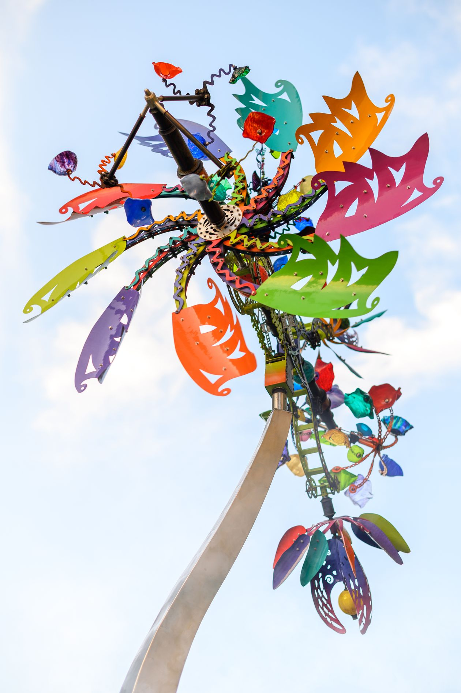
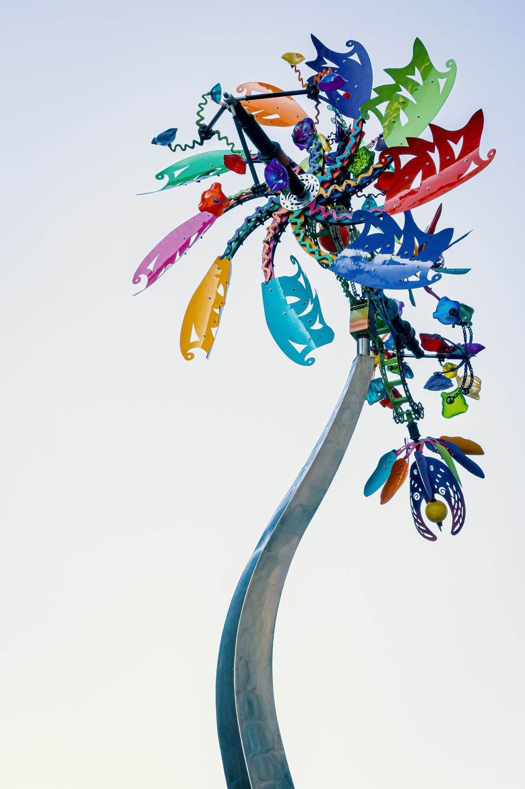
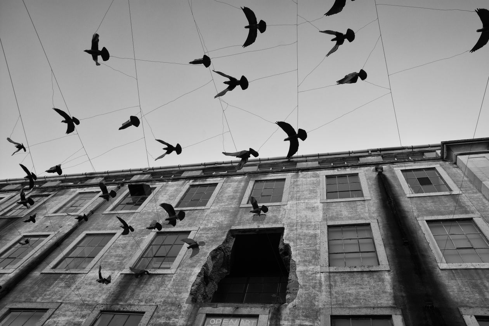
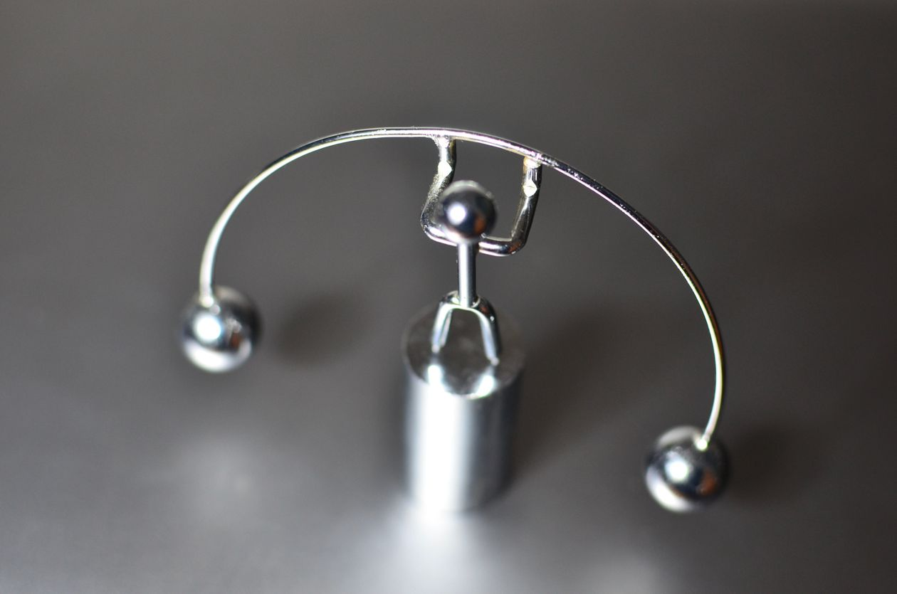

Elias Brandt makes kinetic sculpture — ceiling mobiles, wind pieces and quiet motorised works — for atria, hospitals and gardens. Every piece is sold the way it will be owned: with its drive stated, its noise measured in decibels, its failure mode described, and a service plan in writing. If a work stops, you already know what happens next.
27pieces installed since 2011 — atria, wards, gardens, one pool hall
23 dB(A)measured noise of the quietest motorised piece, at 3 m, empty atrium
10 yearsbearing warranty on every ceiling-hung commission
2 slotsopen in the 2027 commission book; editions available now

Fig. 01 — Type reference. A wind-driven rotating installation photographed from below (Pexels, Brett Sayles). Shown as a drive-type reference; it is not one of the works in the register below.
§ 01 · The Signature Instrument
The balance explorer
Every mobile in the workshop is balanced on a knife-edge before it is balanced on paper — but the paper comes first. This is the main arm of Counterpoise No. 4, drawn at 1:10. Change the cluster weights or slide the fulcrum and the drawing does what the metal would do: torque is weight × arm, and the arm settles where the numbers tell it to. Nothing here is decorative — this is the calculation taped to the workshop wall.
Fig. 02 — Main arm, Counterpoise No. 4 · stainless tube, copper-leaf vanes, brass counterweights · hangers drawn vertical, as they hang
Left cluster weight
The vane cluster and its counterweight disc, weighed together.
3.0kg
Right cluster weight
The sub-beam assembly: two discs on a 116 cm cross-arm.
2.0kg
Fulcrum position
Slide the suspension point along the 240 cm arm. The arm lengths are the levers the weights pull on.
LEFT ARM 96 cmRIGHT ARM 144 cm
Set it moving
The diagram is still until you start it — as a piece should be, in a room where nobody asked it to perform.
A ±1.2° sway, period about 9 seconds — the gait of the real arm on its bearing.
Readout — as calculated, not estimated
Torque, left
288 kg·cm
Torque, right
288 kg·cm
Net torque
0 kg·cm
Arm tilt
0.0°
Balances with fulcrum at
96 cm from left
State
IN BALANCE
In balance. The arm floats level and a 0.4 m/s air current — a door opening two rooms away — is enough to turn it. This is the state the piece is installed in, and the state its bearings are rated for.
§ 02 · Register of Works
What is out in the world
Six pieces that stand for the practice. Every work carries its tombstone: what it is made of, how far it reaches, what drives it, where it lives, and whether you can have one. Photographs on this page are type references, captioned as such — the register is the record.

Ref. A — Wind drive. Outdoor wind sculpture (Pexels, Brett Sayles). The drive class of Nine Breezes.

Ref. B — Suspended work. Elements hung on wires over a public route (Pexels, Zally). The suspension class of Ward Round.

Ref. C — Balance study. A chrome balance toy (Pexels, Skylar Kang) — the desktop ancestor of every ceiling arm in the register.
Ward Round · 2024
A near-silent motorised mobile for a children's hospital atrium — forty-one anodised elements turning above the ward entrance, slow enough to watch a child's breathing settle to it. The full case, including its noise measurements, is on the Installations page.
Materials
Anodised aluminium, stainless cable
Span / drop
5.2 m / 3.8 m
Drive
Stepper motor, belt — 23 dB(A) at 3 m
Site
Children's hospital atrium, Leeds
Status
Installed
Slow Weather · 2023
An air-current mobile for a logistics company's headquarters: no motor, no power, no controls. The building's own ventilation turns it, which means it speeds up when the building wakes and sleeps when it sleeps.
Materials
Brushed stainless, copper-leaf vanes
Span / drop
4.2 m / 3.1 m
Drive
Building air current (HVAC)
Site
Office atrium, Utrecht
Status
Installed
Nine Breezes · 2022
A wind-driven garden piece on an exposed Cornish headland, engineered backwards from its survival figure: it is designed to feather, spill wind and still be standing after a 130 km/h gust. It has now weathered two named storms.
Materials
Corten steel, stainless, bronze bearings
Span / height
3.6 m / 4.4 m mast
Drive
Wind — feathering vanes, shear-pin fuse
Site
Private garden, Cornwall coast
Status
Installed
Counterpoise No. 4 · 2025
The edition piece — the same arm you balanced above, at full size. Brass counterweights, walnut end-caps, and a balance so fine it answers a window opening. Made in an edition of three; the explorer on this page is its drawing.
Materials
Stainless tube, brass, walnut, copper leaf
Span / drop
2.4 m / 1.6 m
Drive
Room air current
Site
Gallery / private interior
Status
Available — 2 of 3
Tide Table · 2021
A wave-motion motorised piece for a leisure-centre pool hall — chlorine-rated seals, a gearbox story the workshop tells honestly (it failed once, at month 14, and the telling is part of the work's record, on the Installations page).
Materials
316 stainless, HDPE vanes
Span / drop
6.0 m / 2.9 m
Drive
Geared motor — 31 dB(A) at 3 m
Site
Leisure centre pool hall, Sheffield
Status
Installed
Study in Two Torques · 2025
A 60 cm studio maquette that never grew up — the test bed where the Counterpoise arm ratios were settled. It sits on the workshop bench and turns in the draught from the door; visitors keep trying to buy it, so it is now formally for sale.
Materials
Brass, steel wire, beech
Span / height
0.6 m / table piece
Drive
Room air current
Site
The workshop, Sheffield
Status
Available
§ 03 · Commissioning
Prices, published like the torques
A moving sculpture is a machine that has to be serviced for decades, so the price includes the servicing logic from the start. These are 2026 figures; a commission quote is fixed in writing before the maquette stage ends.
The rate card
Work
Basis
Price
Interior commission, span to 3 m
Fixed quote after maquette
from £18,000
Interior commission, span 3–6 m
Fixed quote; structural sign-off included
from £34,000
Outdoor wind piece
Fixed quote; foundations priced separately
from £22,000
Counterpoise edition (of 3)
Per piece, installed
£6,400
Studio maquettes & studies
Per piece
from £850
Consultancy / site engineering
Day rate — feasibility, surveys, expert review
£650 / day
Annual service visit
Per piece, years 2–10 under plan
£380 / visit
What moves the price
Span and drop — every extra metre is structure, rigging and insurance, not just metal.
Drive — air-current pieces are cheapest to own; a silent motorised drive adds the motor, the controls and the service obligation.
Site engineering — an unknown ceiling costs a survey and sometimes a structural engineer; a known one doesn't.
Access — a piece installed from a tower scaffold costs less than one installed over a live ward at night.
Service years — the plan is priced openly, per visit, so you can compare it with your own facilities team doing the work.
§ 04 · Method
From maquette to service plan
STAGE 01
Maquette
A working model at 1:10 — the same scale as the drawing above — that moves the way the piece will move. You approve motion, not renderings. Fixed fee, credited against the commission.
STAGE 02
Engineering review
Loads, bearings, drive and failure modes calculated and, for ceiling pieces over 25 kg, signed off by a chartered structural engineer. The calculations become part of your building file.
STAGE 03
Fabrication
Cut, welded and finished in the Sheffield workshop. Bearings and motors are bought in from named makers — no unbranded drivetrain parts, ever, after the lesson recorded in the Tide Table case.
STAGE 04
Balance & test
The assembled piece runs in the workshop for a minimum of 200 hours — balanced, tilted, stalled and restarted — before it is allowed to travel. Noise is measured and written on its plate.
STAGE 05
Install
Installed by the workshop team with your facilities staff present, so the people who will live with it watch it go up and learn how it comes down.
STAGE 06
Service plan
An annual visit — clean, inspect, re-balance, log — with a written report each time. The plan, the manual stilling procedure and the spare-parts list are handed over on day one.
§ 05 · From the Building File
What the client for Ward Round says
“We specified a number — 25 decibels at three metres — before we ever discussed what the piece would look like, and Elias treated that number as the brief. Two years in, the atrium staff can tell you the mobile's service date the way they can tell you the lift's. It has never once been the thing that broke.”
Facilities & Estates Manager, the children's hospital that commissioned Ward Round (2024) — quoted from the year-two service report, with permission.
§ 06 · Next
Two slots in the 2027 book
A commission starts with a conversation about the room, the ceiling and the air in it — bring approximate dimensions and one honest answer: how quiet does it need to be?